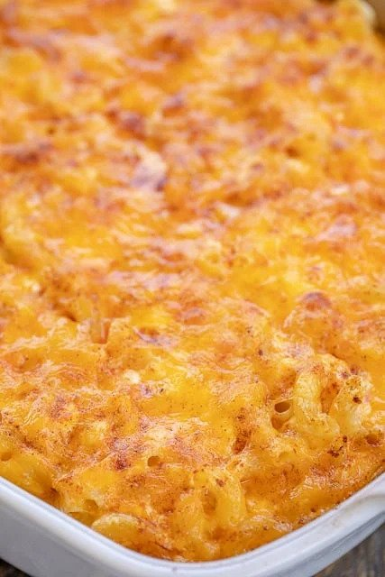

Description
Years ago, Terry Crews blessed us simple peasants with his family's Mac and Jeezy recipe. I've modified it to fit closer to my personal tastes and preferences.
Ingredients
- 250g Macaroni
- 450g Creamy cottage cheese or small curd cottage cheese
- 200g shredded sharp cheddar cheese
- 250g sour cream
- 1 large egg, beaten
- 1 teaspoon of salt
- 1 tablespoon of coconut oil
- 250g panko/Italian bread crumbs
- Paprika
The Process
- Preheat your over to 180 degrees.
- Cook the macaroni to an al dente finish
- Rinse and drain the macaroni.
- Add your cottage cheese, most of your shredded cheddar, sour cream, egg, and salt into a mixing bowl.
- Mix in your macaroni into the mixing bowl with everything else.
- Lubricate a casserole dish with the coconut oil.
- Add in your mac mixture to the casserole dish.
- Top with cheese and paprika.
- Bake for 45 minutes.
- Pull your casserole dish out of the oven and top it with panko.
- Broil for 1 minute.
- Remove the casserole dish, put more cheese on top of the panko.
- Broil again for 1 minute.
- Serve.